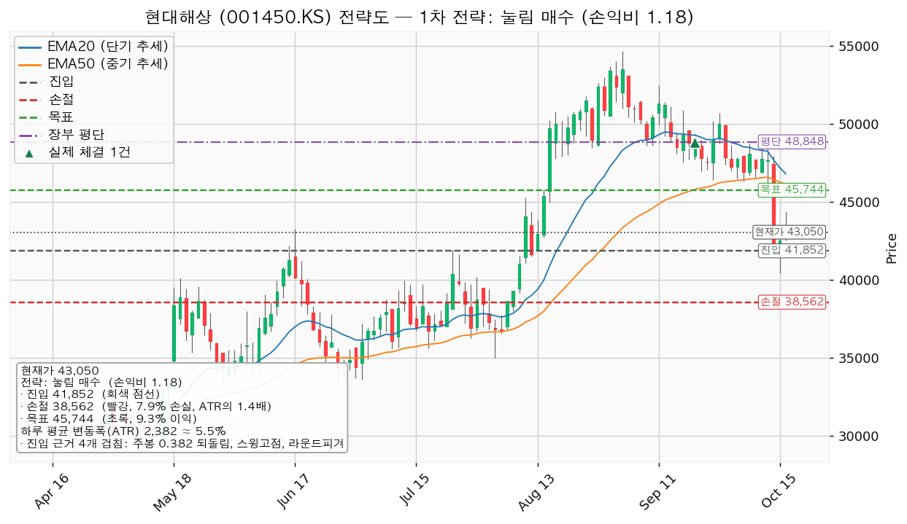
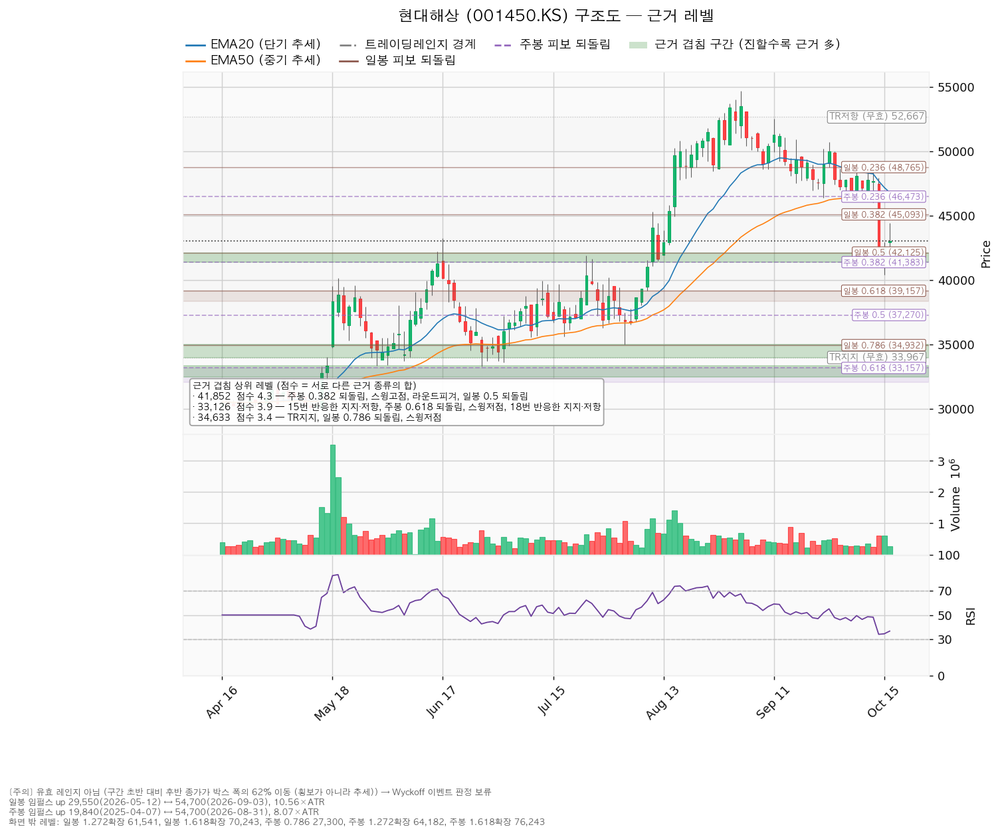
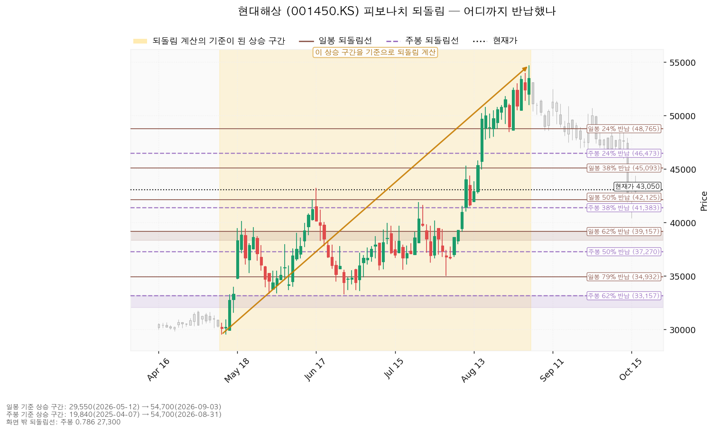
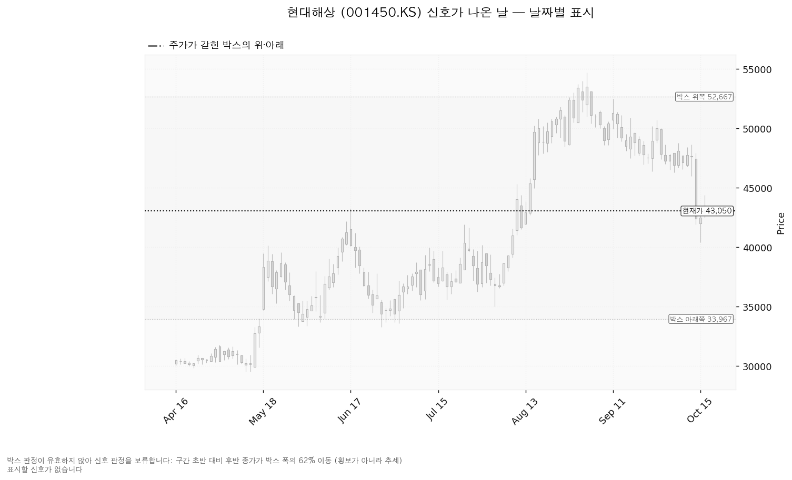

현대해상 (001450.KS)은 자동차·장기·일반보험을 파는 한국의 손해보험사입니다.
| 선 | 가격 | 판정 방식 | 현재 상태 | 뜻 |
|---|---|---|---|---|
| 회복선 | 45,744원 (+6.26%) | 일봉 종가 회복 후 되돌림 지지 | 회복 대기 | 일봉 0.382 되돌림 + 라운드피겨 + 50일 지수이동평균. 상승 전환 1단계이며 국면 이탈 중에는 사는 선이 아닙니다 |
| 집행 손절 | 38,562원 (-10.43%) | 장중 저가 도달 | 미도달 | 41,852원 진입분에만 유효. 미진입자에게는 무의미 |
| 관망 종료 기준 | 39,470원 (-8.32%) | 일봉 종가 이탈 | 유지 중 | 매수 계획 종료 — 새 리포트 대기 |
| 확인선 | 46,635원 (+8.33%) | 일봉 종가 돌파 후 되돌림 지지 | 미돌파 | 주봉 0.236 되돌림 + 20일 지수이동평균 + 7봉 전 반응. 박스 상단 52,667원은 그 위 맥락 |
| 폐기선 | 41,852원 (-2.78%, 하루 평균 변동폭의 0.50배) | 이탈 후 3거래일 내 회복 실패(또는 그 전에 39,470원 아래 종가) + 반등에서 저항 확인 | 유지 중 | 유효 박스가 없어 셋업 구조선을 씁니다 |
| 항목 | 값 |
|---|---|
| 이름 / 엣지 | 눌림 매수 · 평균회귀(지지로 눌릴 때 산다). 승률이 높고 이익 폭이 작은 유형이며, 이 엔진에서 잰 승률은 없음 |
| 진입 | 41,852원 장중 도달 (-2.78%, 0.50 ATR 아래) — 코스피 200일선 회복 전에는 집행하지 않음 |
| 진입 근거 | 주봉 0.382 되돌림 + 7월 24일 스윙고점 41,900원 + 라운드피겨 42,000원 + 일봉 0.5 되돌림 (41,383~42,125원) |
| 집행 손절 | 38,562원 — 일봉 0.618 되돌림·스윙고점·라운드피겨 40,000원이 겹친 39,157~40,000원 바로 아래 |
| 목표 | 45,744원에서 전량 매도 (목표 도달) |
| 손익비 / 구조 증명도 | `1:1.18` (손절 1.38 ATR, 7.86%) / 선취형(구조 미확인) |
대표로 고른 이유: 손익비 1.18 × 선취형 × 진입 근거 네 개 겹침. 돌파 매수 후보는 돌파 확인형이지만 `1:0.18`이라 보류이며, 상대강도·거래량이 순위에 0.945배를 곱했으나 순서는 바뀌지 않았습니다. 손절이 겹침 구간 안이 아니라 그 아래에 놓여 그만큼 손익비가 낮아졌고, 엔진 손절이 이미 구조적 손절이라 별도의 구조적 손익비는 없으며 엣지와 청산이 어긋난다는 경고도 없습니다. 진입~목표가 1.63 ATR로 2배 미만(관행적 기준)이라 단일 청산이며, 분할하면 전 구간 손익비가 `1:1.18`에서 `1:0.86`으로, 본전 손절에서 멈출 때 `1:0.27`로 내려갑니다. 확인선 46,635원은 목표 바로 위라, 45,744원에서 전량 매도 후 46,635원을 일봉 종가로 넘기면 새 셋업으로 다시 잡습니다. 진입가가 현재가 아래라 추격 문제는 없고, 계획 진입가 41,852원은 평단 48,848원 아래입니다(보유분은 매도하므로 진입하면 신규 진입).

| 단계 | 트리거 | 행동 |
|---|---|---|
| 관찰 | 일봉 종가가 41,852원 아래로 마감 | 신규 진입만 중단. 손절은 그대로 |
| 경고 | 이탈 후 3거래일 안에 41,852원을 종가로 회복하지 못함, 또는 그 전에 일봉 종가가 39,470원 아래로 마감(하루 평균 변동폭 1배만큼 더 밀림) — 둘 중 먼저 오는 쪽 | 되돌림 지지 상실 우세. 반등에서의 반응 확인 |
| 무효 | 반등이 41,852원에서 막히고 그 아래로 되밀림 | 셋업 폐기, 새 구조가 생길 때까지 관망 |
장중 일시 이탈은 어느 단계에도 해당하지 않으며, 집행 손절 38,562원은 단계와 무관하게 따로 작동합니다. 폐기선이 현재가에서 0.50 ATR이라 가격 무효화가 실무상 작동하므로 별도의 실적 기준 무효화는 두지 않습니다.
| 가격대 | 겹치는 근거 |
|---|---|
| 46,473~46,797원 | 주봉 0.236 되돌림 + 20일 지수이동평균 + 7봉 전 반응 (확인선) |
| 45,093~46,140원 | 일봉 0.382 되돌림 + 라운드피겨 + 50일 지수이동평균 + 7봉 전 반응 (회복선·목표) |
| 41,383~42,125원 | 주봉 0.382 · 일봉 0.5 되돌림 + 스윙고점 + 라운드피겨 (진입·폐기선) |
| 39,157~40,000원 | 일봉 0.618 되돌림 + 스윙고점 + 라운드피겨 (손절이 이 아래) |
| 32,475~33,350원 | 15회·18회 반응한 가격대 + 주봉 0.618 되돌림 + 스윙저점 둘 |
730일치 일봉에서 40·90·180봉 창을 모두 시험했으나 어느 창도 박스로 성립하지 않았습니다(90봉 기준 종가가 박스 폭의 62% 이동해 횡보가 아닌 추세). 그래서 와이코프 판정은 보류이고 신호일도 산출되지 않았으며, 위 회복선·확인선은 박스 경계가 아닌 참고용 구조선입니다. 참고로 90봉 안쪽은 지지 테스트 거래량 증가(6월 26일 1.36배 → 8월 4일 2.05배)와 저점 절하로 분산 우위이고, 가격은 28,300~39,000원 박스에서 위로 올라와 들어왔습니다.

일봉 되돌림 기준은 5월 12일 29,550원 → 9월 3일 54,700원이며, 현재가 43,050원은 이 상승분의 46.3%를 반납해 0.5 되돌림 42,125원 바로 위에 있습니다. 주봉 기준(2025-04-07 19,840원 → 2026-08-31 54,700원)의 0.382 되돌림 41,383원이 같은 자리에 겹칩니다.

유효 박스가 없어 신호일 집중도에는 표시된 신호가 없습니다.

후행 PER이 조회되지 않아 후행·선행 비교는 못 하고, 선행 PER 3.25배에 올해 EPS 12,611원(-3.04%) · 내년 13,097원(+4.40%)입니다. 목표주가는 17명 평균 52,882원(+22.84%), 최저 32,000원(-25.67%), 최고 65,000원(+50.99%), 추천 매수이며 현재가는 최저보다 위, 평균보다 아래입니다. 내년 EPS는 90일 +19.6% · 30일 -0.0%, 올해 EPS는 90일 +25.6% · 30일 -0.6%로 상향은 이미 끝났고, 추정치는 유지된 채 가격만 빠진 배수 수축입니다. 재평가 계기는 이 자료에서 찾지 못했습니다(기다릴 근거를 못 찾았습니다). 2025-12-31 결산 기준 영업현금흐름 +3조 5,271억원, 잉여현금흐름 +3조 4,958억원, 설비투자 -67.6%로 현금흐름 적자는 없습니다. 평균 목표 52,882원은 내년 EPS 기준 4.04배로 현재 3.29배 대비 상승분이 배수 확장에서 옵니다.
| 날짜 | 이벤트 | 볼 것 |
|---|---|---|
| 매 거래일 | 코스피 200일선(6,411) 회복 여부 | 회복 전에는 신규 매수 없음 |
| 2026-11-12 | 분기 실적 | 내년 EPS 컨센서스 13,097원의 방향, 영업현금흐름 흑자 유지 |
다음 실적 이후 구간은 확인할 자료가 없습니다.
국면이 돌아와 진입하면 계좌 139,498,400원의 1%(1,394,984원)를 손절 폭 3,290원으로 나눠 423주 · 17,703,447원(계좌의 12.7%)이며 13% 상한 안입니다. 하루 평균 변동폭이 주가의 5.53%이고 손절이 그 1.38배라 도구 적합성 문제는 없습니다. 판정은 신규 매수 없음(국면 이탈), 대기 좌표는 41,852원 눌림 매수 `1:1.18`이며 미달 항목은 20일선 위 · 지수 대비 20일 초과수익 · 상대강도선 신고가 · 거래량 강도 · 박스 안쪽입니다. 보유 10주는 다음 거래일 전량 매도 (국면 이탈).
후행 PER·후행 EPS·선행 EPS가 조회되지 않았습니다. 보유 10주에는 9월 29일 목표(50,500원), 9월 30일 집행 손절(47,400원) 두 번의 매도 신호가 장부에 매도 없이 남아 있습니다.
ATR: 하루 평균 변동폭. EPS: 주당순이익. PER: 주가 ÷ 주당순이익. 지수이동평균: 최근 값에 가중치를 더 준 이동평균. 되돌림: 앞선 상승분 중 얼마를 반납했는지를 비율로 나눈 선. 와이코프: 박스 안의 거래량·가격 흐름으로 매집과 분산을 가르는 분석법.